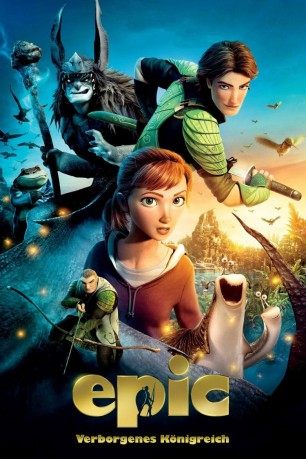

Alternativ: Epic
 
 IMDB-Wertung: 6.7 / 10
IMDB-Wertung: 6.7 / 10  Metascore:
Metascore: 
Tief im Wald, im Herzen der Wildnis, tobt seit ewigen Zeiten ein Krieg zwischen den Kräften des Guten und den dunklen Mächten des Bösen, ausgetragen von Schnecken, Vögeln und Insekten, winzigen Waldmenschen und brutalen Kriegern. Die Menschen bekommen nichts von diesen Kämpfen mit. Doch durch einen Zauber wird das junge Teenager-Mädchen Mary Katherine mitten in dieses verborgene Reich transportiert. Mary ist die Tochter eines verrückten Professors, der skurrilen Experimenten und Forschungen nicht abgeneigt ist. Ihr Vater hatte schon immer eine Ahnung, dass die Menschen die Welt nicht alleine bewohnen. In der Welt der Waldbewohner gefangen, gerät Mary Katherine zwischen die Fronten und muss sich mit einem bunt zusammengewürfelten Haufen voller skurriler und fantastischer Wesen zusammentun, um dieses verborgene Reich zu retten - denn davon hängt auch das Schicksal unserer Welt ab.
Jahr: 2013
Dauer: 102 Minuten
FSK: 6
Land: USA Studio: 20th Century FoxTonspuren:
Untertitel:
Auflösung: 1080p (1920x1080) Größe: 9717 MB
Genre: Animation/Trick, Abenteuer, Familie, Fantasy
Regisseur: Chris Wedge
Drehbuch: James V. Hart, William Joyce, Daniel Shere, Tom J. Astle, Matt Ember
Soundtrack: Danny Elfman
Darsteller:
 Blake Anderson als Dagda
Blake Anderson als Dagda Aziz Ansari als Mub
Aziz Ansari als Mub John DiMaggio als Pinecone Jinn
John DiMaggio als Pinecone Jinn Troy Evans als Thistle Jinn
Troy Evans als Thistle Jinn Colin Farrell als Ronin
Colin Farrell als Ronin Judah Friedlander als Taxi Driver
Judah Friedlander als Taxi Driver Josh Hutcherson als Nod
Josh Hutcherson als Nod Joe Massingill als Stickman Jockey
Joe Massingill als Stickman Jockey Chris O'Dowd als Grub
Chris O'Dowd als Grub Rosa Salazar als Roller Derby Girl
Rosa Salazar als Roller Derby Girl Amanda Seyfried als Mary Katherine, M.K.
Amanda Seyfried als Mary Katherine, M.K. Jason Sudeikis als Bomba
Jason Sudeikis als Bomba Christoph Waltz als Mandrake
Christoph Waltz als Mandrake Thomas F. Wilson als Finn
Thomas F. Wilson als Finn Matt Adler als Additional Voices
Matt Adler als Additional Voices Stephen Apostolina als Additional Voices
Stephen Apostolina als Additional Voices Eric Bradley als Additional Voices
Eric Bradley als Additional Voices David Cowgill als Additional Voices
David Cowgill als Additional Voices Rif Hutton als Additional Voices
Rif Hutton als Additional Voices Hope Levy als Additional Voices
Hope Levy als Additional Voices Selenis Leyva als Additional Voices
Selenis Leyva als Additional Voices Brian Scott McFadden als Additional Voices
Brian Scott McFadden als Additional Voices Peter Pamela Rose als Additional Voices
Peter Pamela Rose als Additional Voices John Storey als Additional Voices
John Storey als Additional Voices Randy Thom als Additional Voices
Randy Thom als Additional Voices David Zyler als Additional Voices
David Zyler als Additional Voices Jason Harris als , uncredited
Jason Harris als , uncredited Edie Mirman als Flower Jinn
Edie Mirman als Flower Jinn Randy Crenshaw als Additional Voices
Randy Crenshaw als Additional VoicesDatei: X:\Kinder Filme (A-F)\Epic - Verborgenes Königreich (2013, FSK6, 1920x1080) 3D.mkv seit 19.03.2015
Festplatte: Kinder-Filme+Trick
 Es gibt insgesamt 68 Filme in der Gruppe 'Kinder Filme (A-F)'
Es gibt insgesamt 68 Filme in der Gruppe 'Kinder Filme (A-F)'